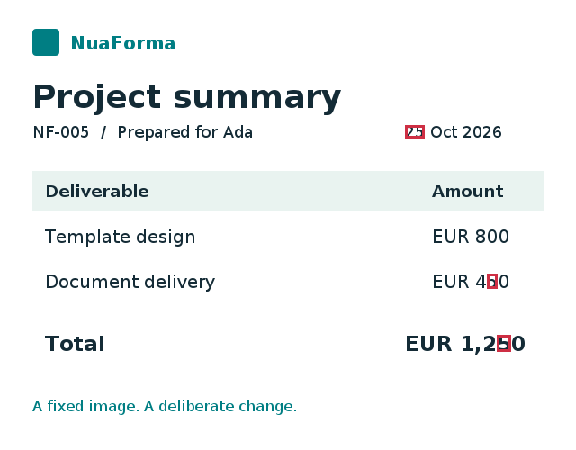

Author in Word
Keep styles, tables, images, headers and supported text boxes. Add placeholders and conditional content where they belong.


OPEN SOURCE DOCUMENT GENERATION
Bring a Word template and your data. Create documents that keep your layout, with the content your readers need.
Java 17 · Apache 2.0 · Run it on your infrastructure
Container 0.3.0-alpha.4 · Maven libraries 0.3.0-alpha.4. Evaluation alpha; APIs are not yet stable.
{
"customer": { "name": "Ada" },
"reference": "NF-001",
"draft": false
}Prepared for Ada
| Item | Quantity |
|---|---|
| Template design | 1 |
| Document delivery | 3 |
ALSO FROM NUAFORMA · A STANDALONE LIBRARY
Turn visual differences into useful test feedback. Compare reference images, mark changed regions and exclude known variation, with a Java core and an optional Kotlin assertion DSL.
Java 17+ · Apache 2.0 · Version 5.0.0

FOR BUSINESSES & INDIVIDUALS
Letters, agreements and reports often share a structure. NuaForma fills that structure with your own data, without making you redesign the document.
Keep styles, tables, images, headers and supported text boxes. Add placeholders and conditional content where they belong.
Include or omit sections, repeat table rows, and handle nested lists and empty values. One template can serve several situations.
Generate editable DOCX, ordinary PDF or validated B-level PDF/A. Add a text watermark when a document is still a draft.
Run on your own infrastructure. Document generation needs no cloud account or network downloads. You choose your fonts and data.
This is an evaluation alpha, not a promise to reproduce every Word feature. Read the supported profiles and known limitations ↗
FOR YOUR ORGANIZATION
Business documents can contain sensitive information. NuaForma gives your team control over deployment and applies explicit processing limits, with request-local native rendering and independently bounded PDF validation.
Generate documents on-premise without a mandatory cloud account, telemetry or implicit downloads of document content. Your organization chooses where the service runs and who may access it.
Native PDF generation runs inside the service with separate processing state and limits for each request. Independent PDF checks use bounded processes and private working files. The container provides the system boundary; there are no separate per-request filesystem or network sandboxes.
Templates use a restricted expression language, not arbitrary application code. Archive, upload, expansion and execution limits bound supported processing. Templates can access all supplied document data, so callers must send only the data they are allowed to include.
The supplied Compose setup uses a non-root user, read-only root filesystem, dropped capabilities, runtime default security policies and bounded temporary storage. PDF/A files are validated before delivery; unsupported requests fail rather than silently changing output.
These controls are not a complete sandbox for in-process DOCX parsing or installed extensions. Extensions are trusted operator code. The service has no built-in authentication or TLS: use an authenticated TLS gateway, deployment quotas and appropriate host security policies. This evaluation alpha has accepted native-runtime security findings; review the deployment and isolation guide ↗ before production use.
Fonts, diagnostics and operator configuration → · Short processing trials → Indicative measurements, not sustained capacity guarantees.
FOR DEVELOPERS
Embed the Java 17 engine in Kotlin or Java, or use the same engine through the REST service. Format support is discovered through public provider contracts.
dependencies {
implementation("dev.nuaforma:nuaforma-core:0.3.0-alpha.4")
implementation("dev.nuaforma:nuaforma-docx:0.3.0-alpha.4")
// Optional: native PDF output
implementation("dev.nuaforma:nuaforma-docx-pdf:0.3.0-alpha.4")
}DOCX and native PDF libraries run in your JVM without LibreOffice. Configure fonts and independent validation using the native PDF guide. Maven Central ↗
FIND YOUR GUIDE
Start with the documentation index for templates, PDF profiles, REST, deployment and operational guides. Building NuaForma, writing private extensions and contributing upstream have their own focused instructions.
0.3 & ROADMAP
Version 0.3.0-alpha.4 adds marked template diagnostic PDFs in the development Playground to locate the first parser error. Mixed expression quotes and detailed development syntax explanations remain available. Production omits excerpts. The date reference and downloadable Maven/Gradle pipe starters help template and extension authors get started. Passive attached Word-template references remain supported without opening the external template. Saved document styles remain authoritative; automatic template style updates still reject. The native PDF engine runs without LibreOffice. Embedded libraries remain Java 17 compatible; the service uses Java 25. Standard PDF and validated PDF/A-1b, 2b and 3b embed supplied fonts. Requested watermarks work in standard PDF, 2b and 3b; 1b explicitly refuses them. The qualified native profile rejects unsupported document constructs. Value/content pipes, health checks, SBOM and the separate development Playground remain available.
Native-runtime security remediation, spreadsheet/OpenDocument providers, signable fields and external template retrieval remain roadmap work, not available alpha features. See the fonts and operations guide for settings, validation boundaries and deployment precautions.
View open issues ↗Choose the native Linux/amd64 or Linux/arm64 container. Keep it private behind an authenticated TLS gateway for remote access. Preserve non-root execution, a read-only filesystem, bounded temporary storage and runtime default security policies.
The example Dockerfile uses the published runtime unchanged. Fonts are mounted at startup, not baked into the image.
FROM ghcr.io/nuaforma/nuaforma:0.3.0-alpha.4
# Keep the image entrypoint and non-root user.
# Supply your fonts through a read-only runtime mount.Download the deployment kit, create custom-fonts and extensions directories, then run:
docker compose up -d
curl --fail http://127.0.0.1:8080/api/v1/capabilitiesThe included Compose file applies the reviewed isolation settings and mounts ./custom-fonts:/opt/nuaforma/custom-fonts:ro. Add standalone TTF/OTF faces you have rights to use, then restart. Inspect the font catalog in capabilities; names alone do not guarantee glyph coverage or embedding permission.
Choose AMD64 for Intel/AMD hosts or ARM64 for Apple Silicon and other ARM64 hosts. No custom image build, seccomp.json or AppArmor profile installation is required. Keep runtime default policies and supplied limits.
services:
nuaforma:
image: ghcr.io/nuaforma/nuaforma:0.3.0-alpha.4
platform: linux/amd64
init: true
user: "1000:1000"
read_only: true
cap_drop: [ALL]
security_opt:
- no-new-privileges:true
pids_limit: 128
mem_limit: 2g
cpus: 2
tmpfs:
- /tmp:rw,size=512m,mode=1777
ports:
- "127.0.0.1:8080:8080"
environment:
NUAFORMA_HEAP_MB: "512"
NUAFORMA_HOST: "0.0.0.0"
NUAFORMA_PORT: "8080"
volumes:
- ${NUAFORMA_CUSTOM_FONTS_DIR:-./custom-fonts}:/opt/nuaforma/custom-fonts:ro
- ${NUAFORMA_EXTENSIONS_DIR:-./extensions}:/opt/nuaforma/extensions:ro
stop_grace_period: 15sThe ARM64 kit uses the native engine and the same default container safeguards, fonts and extension mounts.
services:
nuaforma:
image: ghcr.io/nuaforma/nuaforma:0.3.0-alpha.4
platform: linux/arm64
init: true
user: "1000:1000"
read_only: true
cap_drop: [ALL]
security_opt:
- no-new-privileges:true
pids_limit: 128
mem_limit: 2g
cpus: 2
tmpfs:
- /tmp:rw,size=512m,mode=1777
ports:
- "127.0.0.1:8080:8080"
environment:
NUAFORMA_HEAP_MB: "512"
NUAFORMA_HOST: "0.0.0.0"
NUAFORMA_PORT: "8080"
volumes:
- ${NUAFORMA_CUSTOM_FONTS_DIR:-./custom-fonts}:/opt/nuaforma/custom-fonts:ro
- ${NUAFORMA_EXTENSIONS_DIR:-./extensions}:/opt/nuaforma/extensions:ro
stop_grace_period: 15sExtract the complete kit, create custom-fonts and extensions, then run docker compose up -d. For Podman on macOS, select standalone podman-compose and absolute paths visible inside the Linux VM; follow the ARM64 Docker/Podman instructions.
Create custom-fonts and extensions next to the Compose file. Place your own TTF/OTF fonts in custom-fonts, readable by UID/GID 1000; restart after changing fonts or trusted extension JARs. Both directories are mounted read-only.
mkdir -p custom-fonts extensions
docker compose up -d
curl --fail http://127.0.0.1:8080/api/v1/capabilities
# Stop the service when finished:
docker compose downThe service binds to loopback port 8080. Add an authenticated TLS gateway before remote access. Keep the runtime default host security policies; no custom host profile is required.
Each kit includes compose.yaml, README.md, Dockerfile, NOTICE and LICENSE. Extract before starting Compose.
Check your browser downloads or download the complete kit with curl:
curl --fail --location https://nuaforma.dev/downloads/docker-kit.zip --output docker-kit.zipExtract docker-kit.zip before running the start commands above. Preserve the supplied limits and runtime default security policies.
The chart uses RuntimeDefault seccomp and requires no custom host profile installation. Qualify it on your own native Linux/amd64 or Linux/arm64 cluster and retain all supplied safeguards.
helm upgrade --install nuaforma ./nuaforma \
--set fonts.existingClaim=nuaforma-fonts
kubectl port-forward service/nuaforma 8080:8080An existing PVC is mounted read-only at /opt/nuaforma/custom-fonts. Give UID/GID 1000 read access to a flat directory of TTF/OTF files; restart the workload after changes. Leave the claim empty if you use bundled fonts. The Service is internal only; the chart does not install a public ingress.
Check PDF availability through capabilities on your cluster. Successful HTTP readiness is not proof that the PDF sandbox can start.
DEVELOPMENT ONLY
Build requests, try your templates and investigate errors on your own development installation. Explore examples, font setup and the marked diagnostic PDF.
Development mode can expose document text in responses and logs. The production image contains the API without this interface.
TEMPLATES & EXTENSIONS
Use fields, inline conditions, nested loops, null checks, formatting and Base64 images in your Word templates. Add private value pipes or your own generator when you need more.
TRY IT ON YOUR OWN INSTALLATION
Download a Word template with images, tables, nested conditions and repeating content. Pick a JSON request below and submit it to your NuaForma service with Bruno, curl or another HTTP client.
Nothing is uploaded to this website. It does not generate documents or connect to your service. All template/data submissions happen in your own HTTP client.
Download everything ↓ One organized ZIP: AMD64/ARM64 Compose, Helm, test examples, Bruno and Postman. Start with START-HERE.md.
Start your own NuaForma service first. Each collection contains version, capabilities, assessment, OpenAPI JSON/YAML and all seven document requests, with local Word/JSON files. Set baseUrl if your service is not at http://localhost:8080. Check that the PDF provider lists pdf under available.writeFormats before generating PDF; declared formats alone do not establish readiness.
bruno.json.baseUrl if needed. No environment selection is required. Keep assets/ beside bruno.json; file paths are relative to the collection root.Edit JSON files under assets/ to try different data. No filesystem scripts or extra sandbox permissions are needed. Optional CLI instructions are in the kit README.
NuaForma.postman_collection.json.assets/. Leave Read files outside working directory off. Paths are relative to this working directory, not the imported JSON.baseUrl if needed. Send Version and Capabilities, then choose a document request. If your client asks to reselect a file, choose its matching file from assets/ in the existing form-data row.Use local files with the desktop client; uploading to a Postman team is not required. Review workspace/cloud-sync settings before adding real documents, data or credentials. Optional Newman instructions are in the kit README.
Extract the testset and run from its root directory. Replace the JSON filename and output extension to choose another scenario; example 05 requires .docx.
curl --fail-with-body http://127.0.0.1:8080/api/v1/documents \
-F 'request=@01-final-pdfa3b.json;type=application/json' \
-F 'template=@nuaforma-example-template.docx;type=application/vnd.openxmlformats-officedocument.wordprocessingml.document' \
--output example.pdfLet the client generate the multipart boundary: do not set a top-level Content-Type on generation requests. Allow at least 180 seconds for local PDF requests. Only save a document after HTTP 200; failures return JSON diagnostics. The included tests check responses, not visual fidelity or readiness on every host.
data holds template values. General options such as locale and watermark live under options; PDF profile options live under output.options. The website examples are complete request envelopes, not just data objects.
THE REST ENDPOINTS
/api/v1/versionPackaged version, contract version and source commit. Does not check PDF readiness.
/health/live · /health/readyLightweight liveness and readiness for Docker and Kubernetes probes. Readiness does not guarantee a particular PDF request can run.
/api/v1/sbomDownload the build-generated CycloneDX 1.7 JSON inventory of shipped components. Private fonts, extensions and request data are not inventoried.
/api/v1/capabilitiesProviders, usable formats, option descriptions and bundled/mounted font catalogs. Private uploads are never listed.
/api/v1/assessSend the JSON request envelope to assess options and provider readiness. No template is uploaded or validated.
/api/v1/documentsSend multipart request, template and optional resource files. Receive a document attachment or structured diagnostics.
/openapi.json · /openapi.yamlDownload equivalent OpenAPI definitions from your own service for documentation and client tooling.
Typical error statuses: 400 malformed transport, 422 invalid or unsupported content/options, 408 deadline exceeded, 503 provider unavailable. Consult the REST guide for the full contract and limits.
BUILT IN THE OPEN
Use NuaForma internally or embed it in your application. Feedback and small, non-confidential examples help shape what comes next.
Explore the repository ↗Evaluation alpha. Runtime component security follow-up is tracked in issue #51; inspect candidate-specific findings before deployment. See issue #51 and the release notes. No authentication or TLS is built into the service.